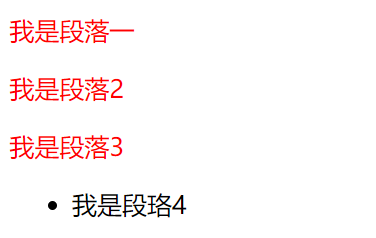
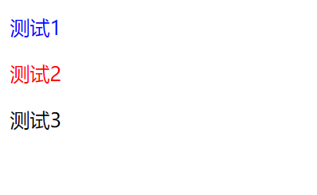

原文连接:https://www.cnblogs.com/ruigege0000/p/11129842.html
一、子元素选择器
1.定义：找到指定标签中所有特定的直接子元素，然后设置属性
2.格式：
标签名称一>标签名称2｛
属性：值；
｝
3.释义：先找到叫做“标签名称1”的标签，然后在这个标签中查找所有直接子元素名称叫做“标签名称2”的元素
div>p{
color:red;
}
.......省略代码.......
<div>
<p>我是段落一</p>
<p>我是段落2</p>
<p>我是段落3</p>
<ul>
<li><p>我是段珞4</p></li>
</ul>
</div>

4.注意：
（1）子元素选择器智慧查找儿子，不会查找孙子，重孙子等等
（2）子元素选择器之间需要用“>”符号相连接，而且不能有空格。
（3）子元素选择器不仅仅可以用标签名称，还可以用其他选择器。如：用id选择器或者classa选择器。
#id1>p{
color:green;
}
.......省略代码.......
<div id="id1">
<p>我是带id的那个测试</p>
</div>（4）子元素选择器可以用>符号一致延续下去。例如：
div>ul>li>p{
color:blue;
}
.......省略代码.......
<div>
<ul>
<li><p>我是段珞4</p></li>
</ul>
</div>
二、后代选择器与子元素选择期的区别和相同点以及企业开发中如何选择
1.二者区别
（1）
后代选择器使用空格作为连接符号
子元素选择器使用>作为连接符号
（2）后代选择器会选中指定标签，所有的特定后代标签，也就是选中儿子/孙子...，只要是被放到指定标签中的特定标签都会选中（即不严格后代）
子元素标签只会选中特定标签中，所有的特定的直接标签，也就是只会选中特定的儿子标签（严格后代）
2.二者的共同点
（1）都可以使用标签名称，id名称，class名称
（2）都可以通过各自的连接符号一致延续下去
3.适用场景
通过不同点就可以看出来了，或者他们的定义
三、交集选择器
1.定义：给所有选择器选中的标签中，相交的那部分标签设置属性
2.格式：
选择器1选择器2｛
属性：值；
｝
3.注意点：
（1）选择器和选择器之间没有任何连接符号
（2）选择器可以使用标签名称/id名称/class名称
<style>
p.abc1{
color:red;
}
.abc2#open1{
color: blue;
}
</style>
</head>
<body>
<p class="abc2" id="open1">测试1</p>
<p class="abc1">测试2</p>
<p class="abc3">测试3</p>
</body>

（3）企业开发中很少使用，只做了解，用其他选择器足以完成，不要这么复杂的结构。
四、源码：
d72_subelement_selector
d74_intersection_selecotr
地址:
https://github.com/ruigege66/HTML_learning/tree/master
2.CSDN：https://blog.csdn.net/weixin_44630050（心悦君兮君不知-睿）
3.博客园：https://www.cnblogs.com/ruigege0000/
4.欢迎关注微信公众号：傅里叶变换，后台回复“礼包”获取Java大数据学习视频礼包